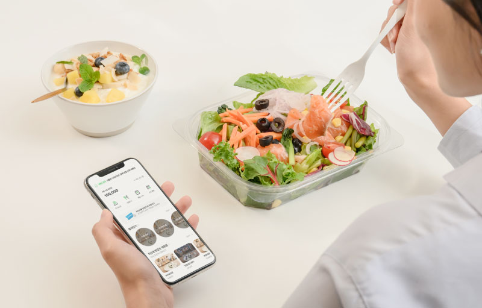
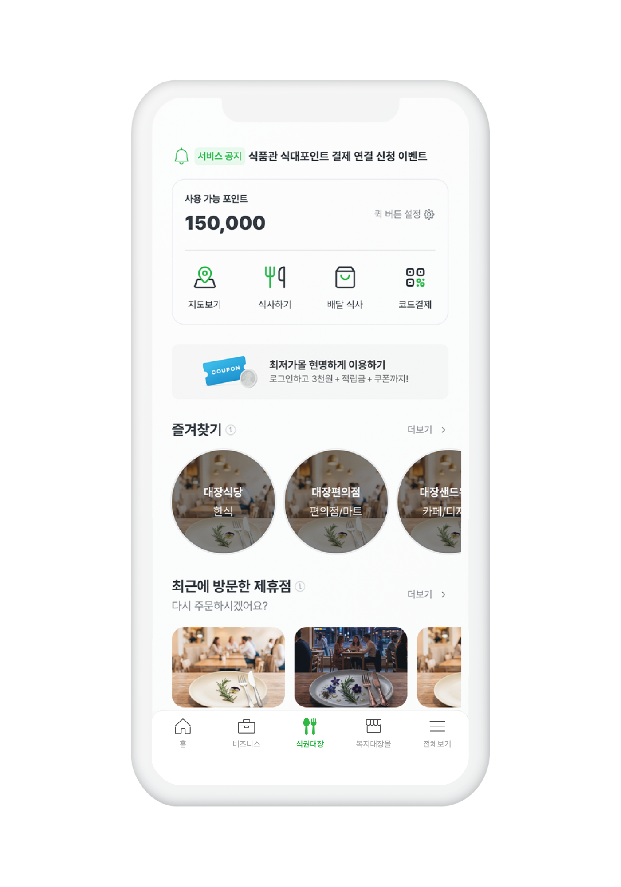
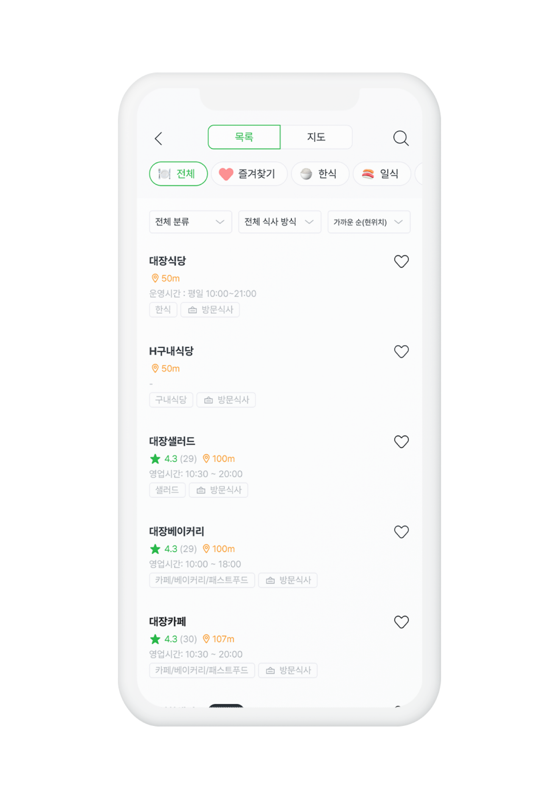
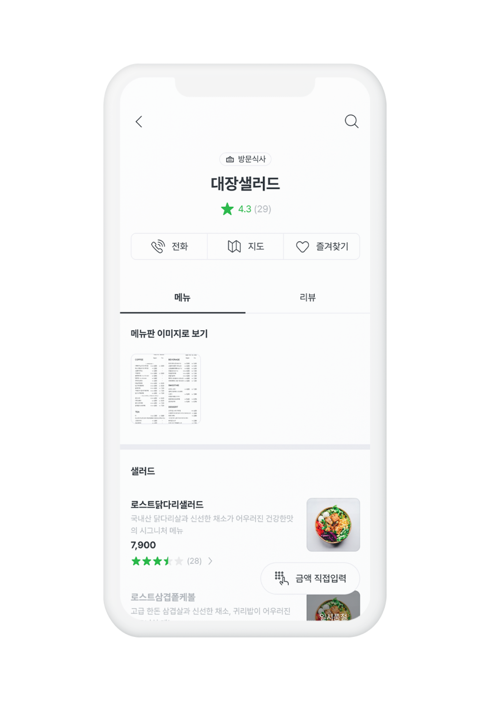
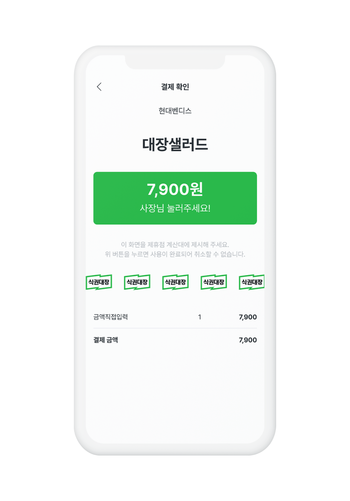

출근하는 날
주변 식당·카페·편의점에서 식대포인트로 결제
 도입 상담 ↗
도입 상담 ↗식권대장
식당에서, 사무실에서, 재택근무지에서. 직원의 식사 선택은 넓히고 회사의 지급·관리·정산은 하나로 연결합니다.

더 좋은 회사의 하루01 / 근무 환경별 식사
주변 식당·카페·편의점에서 식대포인트로 결제
점심시간에 맞춰 배달식사를 수령
배송지를 선택해 식품관 상품 주문
단체급식과 1/N 함께결제까지
02 / 직원과 담당자의 경험
직원의 이용 경험
담당자의 운영 경험
03 / 정책 설정 예시
예시 정책. 금액과 운영 기준은 회사 설정에 따라 달라집니다.
실제 앱 이용 화면
제휴점 탐색부터 결제까지 이어지는 실제 식권대장 화면입니다.




공식 홈페이지 제공 앱 이미지. 현재 앱 버전과 일부 차이가 있을 수 있습니다.
고객사례
직원부터 방문 손님까지,
필요한 순간 식권 지급
구내식당 메뉴 고민에서
직원의 식사 선택으로
사옥을 옮겨도 이어지는
익숙한 식사복지
출처: 식권대장 고객사례 · 기업별 이용 환경과 경험은 다를 수 있습니다.
도입 과정
자주 묻는 질문
기존 이용 식당을 우선적으로 제휴하고 신규 식당 제휴도 진행할 수 있습니다. 회사 위치와 이용 조건에 따라 확인합니다.
식대 지급과 사용 내역, 부서별·식당별 통계를 확인할 수 있습니다.
회사 규모, 이용 환경과 선택한 구성에 따라 달라집니다. 상담 화면에서 관심 서비스와 회사 정보를 남기는 흐름을 확인할 수 있습니다.
좋은 복지의 시작